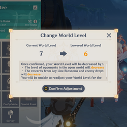

Adventure Rank
Adventure Rank (AR) serves as the main progression system in Genshin Impact, determining how much of the game world players can explore and what challenges they can take on. Players increase their Adventure Rank by earning Adventure EXP, which can be gained in a variety of ways. These include defeating enemies in the open world, discovering and collecting treasure chests, completing in-game events, and advancing through story and side quests. As players raise their AR, they unlock access to new areas, more difficult domains, and better rewards, which makes advancing in rank a key part of the game’s overall progression system.

World Level
World Level is the over-world progression system in Genshin Impact that determines the difficulty of enemies in the game’s open world and influences the rewards players can earn. As players increase their World Level, the enemies they encounter become tougher and more challenging to defeat, requiring stronger characters, better strategies, and upgraded weapons and artifacts. In return, the higher World Level also enhances the quality of loot obtained from bosses, elite enemies, and regular foes, including rarer materials and more powerful artifacts. This system ensures that the gameplay continues to evolve, offering players an increasingly rewarding experience as they advance and refine their skills.

Adventure Handbook
The Adventure Handbook is a versatile tool in Genshin Impact that provides players with an organized way to keep track of their in-game progress and access important features. Through the handbook, players can view a list of available quests, including story missions, side quests, and world quests, helping them stay on top of their objectives. It also offers a section dedicated to daily commissions, which are quick tasks that reward Adventure EXP and valuable resources. Additionally, the handbook allows players to locate and track domains, which are special dungeons containing powerful enemies and high-quality rewards.
Archon Quests
Archon Quests serve as the main storyline of Genshin Impact, guiding players through the central narrative of the game. Each Archon Quest builds upon the events of the previous one, gradually revealing more about the world of Teyvat, its history, and the mysteries surrounding the Archons, who are the elemental gods governing the seven nations. These quests often involve intricate storylines, engaging dialogue, and challenging battles, immersing players in the unfolding plot. Archon quests also tend to offer the biggest rewards.
Source:
Game8 Genshin ImpactImage Sources:
Genshin Impact Fandom Genshin Impact Fandom RockPaperShotGun Genshin Impact FandomTips and Tricks
- Complete the Main Story (Archon Quests)
- Unlock New Regions
- Level Up Your Characters
- Focus on Your Starter Character and Team
- Complete Daily Commissions
- Use Primogems Wisely
- Upgrade Artifacts and Weapons
- Explore the World and Gather Resources
- Complete World Quests and Side Quests
- Unlock Domains and Boss Fights
- Learn about Elemental Reactions
- Use your Resin Wisely
- Join Co-Op Mode and Play with Friends